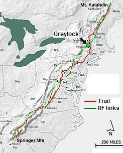
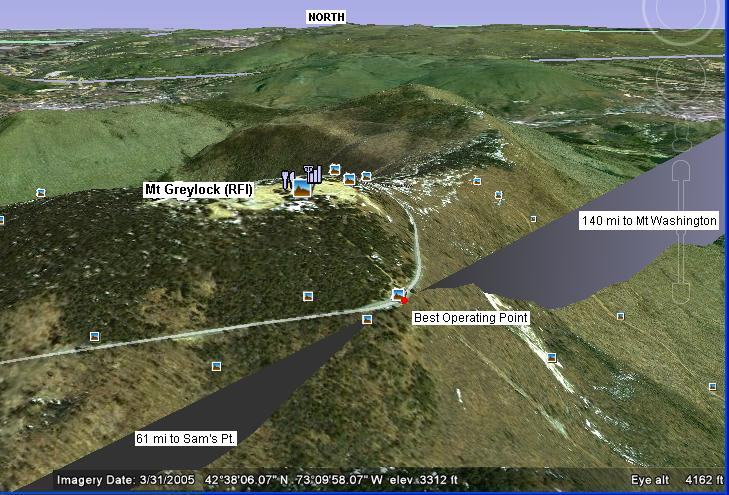
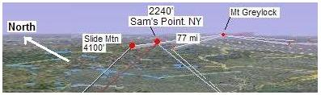
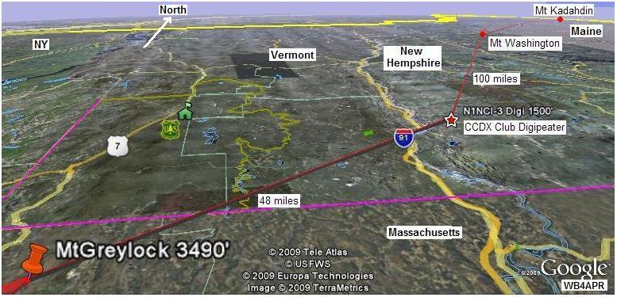

2014 SUCCESS! The Greylock team was sponsored by Walpole Emergency Communications Association and assisted by Walpole EMA. The participants were Jeff Marden KB1TJI, Brad Alexander K1RBA, and Don Rolph AB1PH, with D710 and two X200 antennas provided by Roger Turner W1ZSA. Jeff Marden provided a third X200 antenna, Walpole EMA provided a backup D710GA and we also had two backup 2M/440 transceivers and an FT817ND running APRSIS32 on a netbook and several D72As. We left Walpole MA a bit before 7 AM in two cars driven by Brad Alexander and Jeff Marden. We reached the turnout at the junction of Summit Road and Rockwell Rd at 10 AM.
In 2013 this parking area was deserted but this year it was packed and difficult to set up smoothly. Further the overall traffic attracted the attention of a Park Ranger who indicated that, while our installation was quite small, we still required a permit. She indicated that they regularly had amateur radio activities on Mt Greylock and they all obtained permits. We will gingerly explore this next year. This did mean, however, that there was a lot of foot traffic and we had an excellent opportunity for community outreach.
The tent was pitched and the D710A was on the air by 10:30. We saw Mt Equinox shortly thereafter and the connections to the north appeared. We saw one stray GDHILL-8 packet which is only partially explained so far, but nothing to the South Sam's Point appeared at about noon, and at that point packets from the South started appearing. By about 1:10 PM it was clear that the full chain was operating smoothly. We started packing up about 2 PM and did a final take down at 2:30 PM when Sams Pt indicated they were going off the air. We were out by a little after 3 PM.
Lessons Learned:
2013 Planning: WECA led by WA1PLE is manning Greylock this year. There is a chance we might be able to bypass Greylock if Equinox can hear Sam's point Direct. This will be a great test. In any case, WA1PLE's team will be moving to a more western position so that they have the best shot to Sam's Point and also a direct shot to Equinox. But as you can see on that link, it is a tradeoff. See the main summary planning for 2013 on this spread sheet.
2012 Planning: James, KB1LOY manned Greylock for the combined Golden Packet and Operation ON-Target event on Saturday, 21 July. Chris N2YYZ , is unable to make it this year.
2011 Success: Chris, N2YYZ heard about the event on the SOTA reflector and took his D72 handheld up the mountain for the digipeater. He prepared an antenna on a tripod and enough battery power to last the full 4 hours. (A good D72 battery should last that long if it is not used for anything else on the way up there. Unfortunately, there was no NewHempshire relay this year. This means he had to hear Mt Washington direct over the top of all his intermod. Fourtunately he did receive a few packets from MTWASH. But he was unable to maintain any UHF Voice links due to the high lever of RF. See his 2011 report. See also the RF link to Mt Washington.
2010 No Team found... None of the 2009 team was able to make it this year. We needed other volunteers to jump in and man the site. Back in 2009, Mount Greylock was manned and ready, but was isolated because of the problems either side. But still some packets were seen down into PA, MD and VA. No report was ever submitted for 2009.
See the Golden Packet plan. . This is one of the 15 hill-top sites from Georgia to Maine we hope to visit this summer on 26 July for 6 hours to attempt to relay a text message using hand-held radios the 2000 mile length of the Appalachain trail. This is to be a no impact Leave-No-Trace type of event of a few individuals at each site. . . Other hikers equipped with APRS ham radios are welcome to participate with advance notice.
Mount Greylock is an outstanding radio location in Northwest Massachusetts. It has tourist access and, unfortunatelly, extreme weather that can change rapidly.. It is frequently used by VHF contesters and has 360 degree views. We are still waiting for a team to form up.
ALTITUDE: . . . . . . . . . . . 3491 feet
POSITION:. . . . . . . . . . . . 42-38.22N / 73-10.02W (loop south side)
LINK NORTHEAST: . . . New Hampshire Link. See
RF details
by KX4O
LINK SOUTHWEST: . . . Sam's Pt,NY.
Test w 442.050 T114. See
RF details
by KX4O
. . . . . . . . . . . . . . . . . . . . . . And
Highpoint, NJ
as a possible 1 hop bypass from GD Hill, PA

VOICE REPEATER:. . . . 146.91 T162 at Greylock
ECHOLINK NODE: . . . . W2PTR-R in Troy/Albany, NY, Node 1774, 145.170 MHz no PL
. . . . . . . . . . . . . . . . . . . . . . KC2IVI-R in East Greenbush, NY, Node 48899, 147.330 MHz, PL 146.2
. . . . . . . . . . . . . . . . . . . . . . K2RVW-R in Ghent, NY, Node 372818, 147.210 MHz, no PL
INTERFERRENCE: . . . Lots of other commercial emitters
TEAM LEADER: . . . . . . A team for 2010 has not yet been found...
. . . . . . . . . . . . . . . . . . . . . .Alan Vigiard, K1SAV * yahoo dot com (new to APRS, needs APRS support) (2009)
. . . . . . . . . . . . . . . . . . . . . .James Cahill KB1LOY * yahoo.com (2009)
. . . . . . . . . . . . . . . . . . . . . .Ellis Rud N1MWJ, n1mwj000 * aol.com, DCR Summit Ranger, Mount Greylock (2009)
 .
Best Location: The bests location for the Greylock APRS digipeater is in the parking lot well below the peak. The edge of this lot has clear line of sight to Mt Washington and Sam's Point. By being well below the top of the mountain, the heavy QRM, intermod and RFI can be avoided.

COMMENTS: .
KB1LOY James Cahill reports on 22 July 2009: I plan to arrive at Mt Greylock on Saturday at 1400 hrs, test above listed nodes and the D710 (primary AT Golden Packet operating rig) and the D700 mobile. I will bring two beams in the event of Sam's Point bypass is required, still need to make up the 75ohm "splitter" though. I will spend the night at Bascom Lodge on the summit and plan to be operational on Sunday at 0930 hrs. I must breakdown at 1600 hrs to return to NYC for work on Monday.
Prior Reports: Alan showed interest in 2009, but he has little APRS background. A quick look on FINDU.COM shows only 4 APRS mobiles in 50 miles of the area and only two of them are 2-way APRS using D710 radios. See APRS hams in the surrounding area. The image to the right shows the path from Sam's Point in New York to Greylock. It might even be possible to bypass Sam's Point and make the link from Greylock to Camelback in one hop.

DETAIL LINK ANALYSIS BY KX4O: Be sure to follow the two RF links at the
top of this page to see the excellent and very detailed RF link analysis
performed for every link in this project by KX4O John Huggins.
Each RF link shows the terrain map
elevations, the AT trail in yellow, the RF path loss itself
including fresnel zones and finally a
statistical plot of the probabilities of link availability. We will very
much be looking at the results of this project compared to the pre-event
analysis and predictions. All of KX4O's links are shown on his
AT Links Page.
The image below carrys that path onward from Greylock to the N1NCI-3 relay point. Again, that path is also solid according to the KX4O analysis that follows.

Bob, WB4APR
See my other GENERAL page on APRS applications and Ideas on the AT
Return to the APRS HOMEPAGE or SiteMap.
{kind=link}
{kind=link}